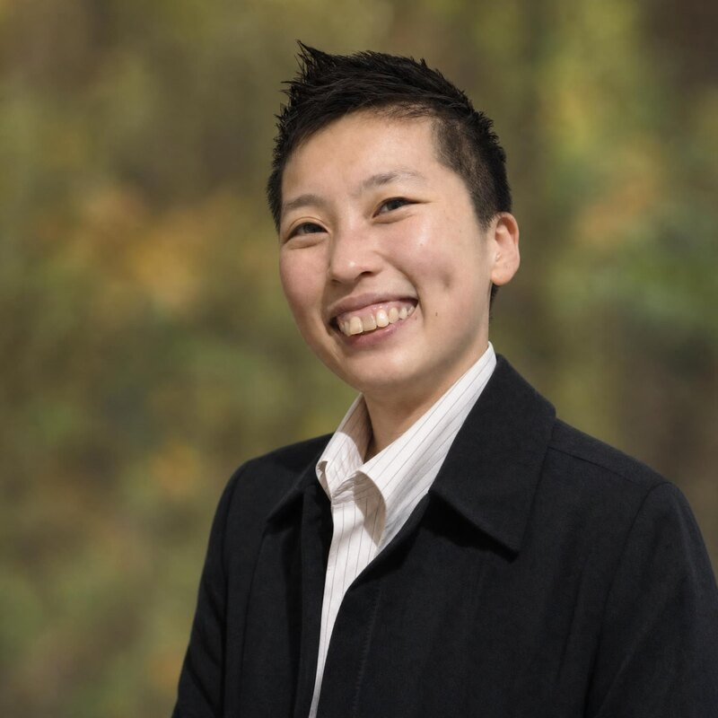

Leadership & Team Development
ORSC systems coaching, team effectiveness, leadership programmes, and psychological safety — strengthening how people work together.
ExploreOrganisational psychologist and ORSC systems coach helping leaders and teams build alignment, psychological safety, and lasting change.

Organisational Psychologist & Systems Coach · BHD Asia
"Helping leaders and teams navigate complexity, build alignment, and strengthen psychological safety."
Part of the BHD Asia team, Jasmine is an Organisational Psychologist with over 15 years of experience designing and delivering interventions that drive leadership development, organisational transformation, and team effectiveness. She blends evidence-based psychology with systems thinking and human-centered design.
Through her consulting and research work, Jasmine has supported over 100 organisations across healthcare, education, government, and technology. As a systems coach and facilitator, her calm, adaptive presence fosters reflective and inclusive spaces for growth — helping people and organisations move through change with clarity.
NUHS · Ministry of Education (MOE) · Ministry of Social & Family Development (MSF) · Singapore Polytechnic · Ngee Ann Polytechnic · Woodlands Health · Thermo Fisher Scientific · StarHub · DBS · OCBC · Xylem.
Jasmine works with leaders, teams and organisations ready to navigate complexity and grow. Every engagement is grounded in diagnostics and co-designed — never off-the-shelf — integrating systems coaching, experiential learning, and a deep respect for the human systems at play.
A path that blends rigorous academic psychology with hands-on organisational practice.
Completed a B.A. in Psychology with double minors in Organizational Psychology and Marketing Management at Murdoch University, earning a Vice Chancellor's Commendation for Academic Excellence.
Awarded the prestigious Erasmus Mundus scholarship to complete a Master in Work, Organizational and Personnel Psychology across Spain and Italy.
Earned her doctorate (Cum Laude & International Mention) on an FPU research scholarship, and was recognised as a "Young Organizational Psychologist with Talent" by the Colegio Oficial de Psicólogos de Madrid.
Led SME transformation initiatives, evidence-based management research, educator development, and strategic retreats — redesigning HR processes and running change-management workshops across sectors.
Completed Organization & Relationship Systems Coaching (CRR Global), deepening her practice in team dynamics, relational systems, and psychological safety.
Brings her organisational psychology and systems coaching practice to BHD Asia's clients — supporting leadership development, culture change, and team effectiveness worldwide.
All engagements are co-designed with you — grounded in diagnostics, not off-the-shelf.
ORSC systems coaching, team effectiveness, leadership programmes, and psychological safety — strengthening how people work together.
ExploreStrategic planning, change facilitation, and culture building — helping organisations align direction, culture, and action.
Explore
Experiential learning design, process facilitation, and design thinking — building internal capability that lasts.
ExploreAll our engagements start with a conversation — no commitment required.